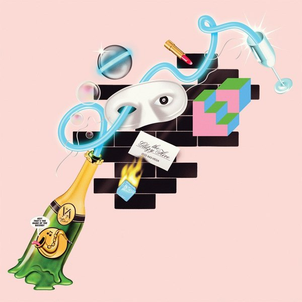
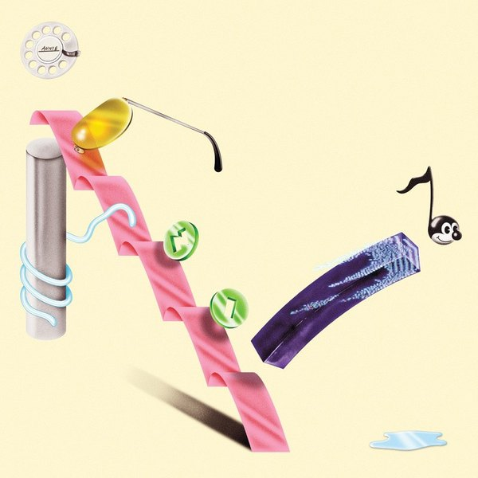
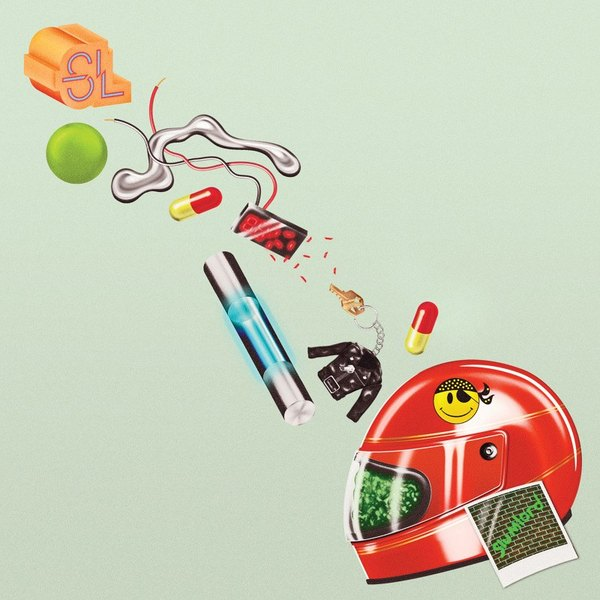
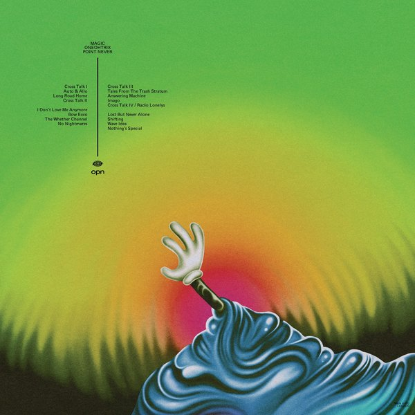
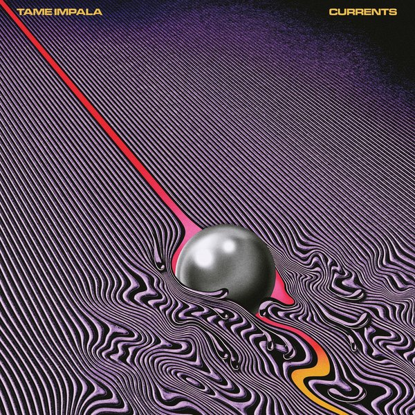
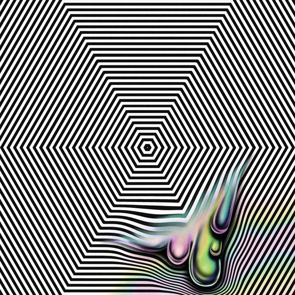
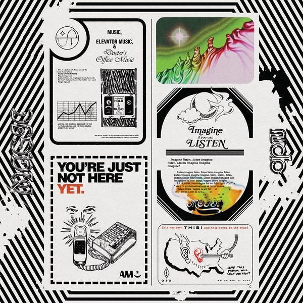

CRVI000734Robert Beatty - Untitled
Album cover · artist and title unrecorded · Trendland plate 03
Album cover · artist and title unrecorded · Trendland plate 03

CRVI000713Helado Negro - The Last Sound On Earth
Designed by Robert Beatty · 2025
Designed by Robert Beatty · 2025
CRVI000715Hunx And His Punx - Walk Out On This World
Designed by Robert Beatty · 2025
Designed by Robert Beatty · 2025

CRVI000730Robert Beatty - Floodgate Companion
Spread · self-published
Spread · self-published

CRVI000725The Weeknd - Dawn FM
Designed by Robert Beatty · 2022
Designed by Robert Beatty · 2022

CRVI000711Tame Impala - Disciples
Designed by Robert Beatty · 2015
Designed by Robert Beatty · 2015

CRVI000737Robert Beatty - Untitled
Album cover · artist and title unrecorded · Trendland plate 06
Album cover · artist and title unrecorded · Trendland plate 06

CRVI000736Robert Beatty - Untitled
Album cover · artist and title unrecorded · Trendland plate 05
Album cover · artist and title unrecorded · Trendland plate 05

CRVI000716Thee Oh Sees - Joe Westerland
Designed by Robert Beatty · 2025
Designed by Robert Beatty · 2025

CRVI000740Robert Beatty - Untitled
Album cover · artist and title unrecorded · Trendland plate 11
Album cover · artist and title unrecorded · Trendland plate 11

CRVI000732Robert Beatty - Untitled
Album cover · artist and title unrecorded · Trendland plate 01
Album cover · artist and title unrecorded · Trendland plate 01

CRVI000727Raglani - Husk
Front cover · designed by Robert Beatty
Front cover · designed by Robert Beatty

CRVI000728Raglani - Husk
Back cover · designed by Robert Beatty
Back cover · designed by Robert Beatty

CRVI000714Robert Beatty - 3 Day Gallon
Ahem Editions print · 2026
Ahem Editions print · 2026

CRVI000738Robert Beatty - Untitled
Album cover · artist and title unrecorded · Trendland plate 07
Album cover · artist and title unrecorded · Trendland plate 07

CRVI000048Oneohtrix Point Never - R Plus Seven
Designed by Robert Beatty · Warp Records · 2013
Designed by Robert Beatty · Warp Records · 2013
CRVI000723Burning Star Core - Challenger
Front cover · designed by Robert Beatty
Front cover · designed by Robert Beatty

CRVI000733Robert Beatty - Untitled
Album cover · artist and title unrecorded · Trendland plate 02
Album cover · artist and title unrecorded · Trendland plate 02

CRVI000718Oneohtrix Point Never - Magic Oneohtrix Point Never
Insert panel A · designed by Robert Beatty · Warp Records · 2020
Insert panel A · designed by Robert Beatty · Warp Records · 2020

CRVI000735Robert Beatty - Untitled
Album cover · artist and title unrecorded · Trendland plate 04
Album cover · artist and title unrecorded · Trendland plate 04

CRVI000717Oneohtrix Point Never - Magic Oneohtrix Point Never
Back cover · designed by Robert Beatty · Warp Records · 2020
Back cover · designed by Robert Beatty · Warp Records · 2020
CRVI000719Oneohtrix Point Never - Magic Oneohtrix Point Never
Insert panel B · designed by Robert Beatty · Warp Records · 2020
Insert panel B · designed by Robert Beatty · Warp Records · 2020
CRVI000731Robert Beatty - Untitled
Illustration
Illustration
CRVI000729Robert Beatty - Floodgate Companion
Spread · self-published
Spread · self-published

CRVI000712Tame Impala - Eventually
Designed by Robert Beatty · 2015
Designed by Robert Beatty · 2015

CRVI000721Ziemba - True Romantic
Designed by Robert Beatty · Sister Polygon Records · 2020
Designed by Robert Beatty · Sister Polygon Records · 2020

CRVI000710Tame Impala - Currents
Designed by Robert Beatty · Modular Recordings · 2015
Designed by Robert Beatty · Modular Recordings · 2015

CRVI000741Robert Beatty - Untitled
Album cover · artist and title unrecorded · Trendland plate 12
Album cover · artist and title unrecorded · Trendland plate 12

CRVI000722Oh Sees - A Weird Exits
Designed by Robert Beatty · 2016
Designed by Robert Beatty · 2016

CRVI000724Forma - Physicalist
Designed by Robert Beatty
Designed by Robert Beatty

CRVI000739Robert Beatty - Untitled
Album cover · artist and title unrecorded · Trendland plate 10
Album cover · artist and title unrecorded · Trendland plate 10

CRVI000726Oneohtrix Point Never - Magic Oneohtrix Point Never
Front cover · designed by Robert Beatty · Warp Records · 2020
Front cover · designed by Robert Beatty · Warp Records · 2020

CRVI000720Oneohtrix Point Never - Magic Oneohtrix Point Never
Insert panel C · designed by Robert Beatty · Warp Records · 2020
Insert panel C · designed by Robert Beatty · Warp Records · 2020